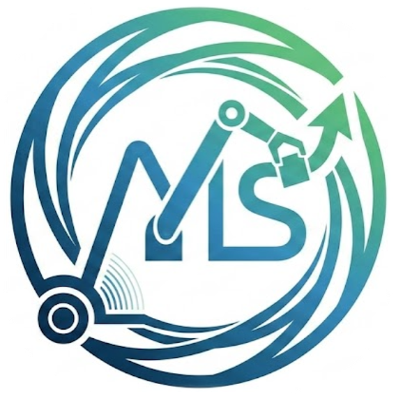
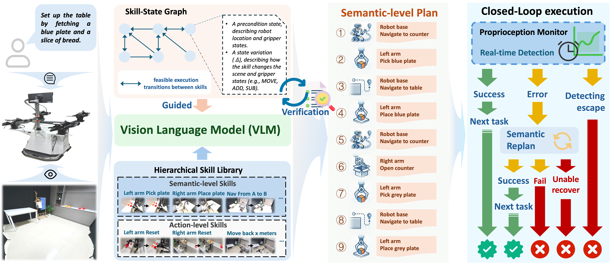

MoMaStage: Skill-State Graph Guided Planning and Closed-Loop Execution for Long-Horizon Indoor Mobile ManipulationVideo demonstrations showcasing the execution examples results of MoMaStage in both real-world experiments and simulation environments.
Abstract
Long-horizon indoor mobile manipulation (MoMa) requires robots to execute extended navigation-manipulation sequences whose feasibility depends on state changes induced by preceding skills. Vision-language models (VLMs) can decompose instructions into plausible skill sequences, but they do not reliably track such cumulative embodiment constraints or revise a plan when execution deviates from expectation. We present MoMaStage, a map-light framework for state-consistent planning and closed-loop execution in long-horizon indoor MoMa. MoMaStage couples a frozen VLM with robot execution through three mechanisms: (i) a hierarchical library of grounded, executable skills and a topology-only projection of a Skill-State Graph (SSG) that constrains the VLM's planning space; (ii) an SSG verifier that propagates scene-region and gripper-occupancy state to reject infeasible plans before execution; and (iii) an event-driven monitor that triggers graph-grounded repair only when an observed outcome invalidates the remaining plan. The SSG captures the compact embodiment state needed for skill sequencing without requiring a dense scene map, while geometric and contact-level conditions remain within the underlying controllers. Experiments in physics-rich simulation and on a real mobile manipulator show that MoMaStage improves planning validity and long-horizon execution survival over the evaluated baselines, while reducing latency and model token consumption.
Overview

We propose MoMaStage, a framework for long-horizon mobile manipulation that drives VLMs to translate instructions into valid skill chains via a Skill-State Graph and a hierarchical skill library, with closed-loop proprioceptive verification for guided replanning upon failure.
Pipeline

Given multi-modal inputs, the system integrates graph-constrained planning with closed-loop execution. (a) The VLM-based planner decomposes long-horizon instructions into semantic skill sequences, restricted by the topological constraints of the Skill Graph. (b) A post-hoc feasibility check is performed using the Skill-State Graph to ensure global state consistency. (c) During execution, the system monitors ego-state transitions and triggers graph-grounded replanning to autonomously recover from failures.